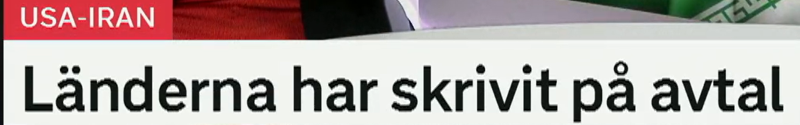
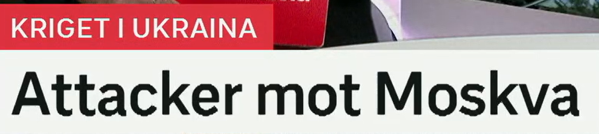
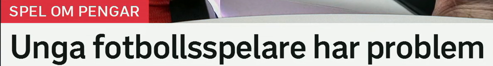
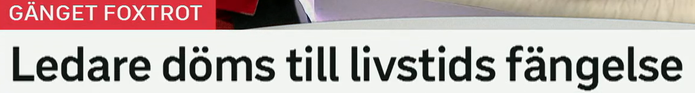

Länderna har skrivit på avtal
这些国家已经签署了协议。
1. skriva på = 签署
- skriva på ett avtal：签一份协议
- underteckna：正式签署，书面语更强
- signera：签名、签署，也可用于合同和文件
- gå med på：同意、接受某条件
2. avtal = 协议、合同
- ett fredsavtal：和平协议
- ett handelsavtal：贸易协议
- ett samarbetsavtal：合作协议
- bryta mot ett avtal：违反协议
Länderna har kommit överens om ett nytt avtal. 这些国家就一项新协议达成一致。
Parterna förhandlar fortfarande om detaljerna. 各方仍在谈判细节。
Avtalet ska undertecknas nästa vecka. 协议将在下周签署。

Attacker mot Moskva
针对莫斯科的袭击。
1. attack / attacker
- en attack：一次袭击、攻击
- ett angrepp：攻击、侵犯，新闻和政治语境常见
- ett anfall：进攻、袭击，也可用于病症发作
- en offensiv：攻势，军事报道常用
2. mot = 对、针对、朝向
- attacker mot staden：针对城市的袭击
- kritik mot regeringen：对政府的批评
- protester mot beslutet：反对该决定的抗议
- vända sig mot något：反对某事
Flera attacker har riktats mot huvudstaden. 多次袭击针对首都。
Regeringen fördömer angreppet. 政府谴责这次攻击。
Kritiken mot beslutet växer. 对该决定的批评正在增加。

Unga fotbollsspelare har problem
年轻足球运动员遇到问题。
1. ung / unga
- ung：年轻的；复数或定形常为 unga
- ungdomar：青少年、年轻人
- unga vuxna：年轻成年人
- yngre：更年轻的，也常指较低年龄层
2. ha problem = 有问题、遇到困难
- ha problem med något：在某方面有问题
- få problem：出现问题
- drabbas av problem：遭遇问题，新闻语气更正式
- svårigheter：困难，常比 problem 更书面
Många unga har problem med spel om pengar. 许多年轻人在金钱博彩方面有问题。
Klubbarna vill hjälpa spelare som får svårigheter. 俱乐部想帮助遇到困难的球员。
Problemen kan växa snabbt. 问题可能迅速扩大。

Ledare döms till livstids fängelse
头目被判处终身监禁。
1. dömas till = 被判处
- döma：判决；也可表示评判
- döms：被判，瑞典语被动形式
- dömas till fängelse：被判入狱
- frikännas：被宣告无罪，和 dömas 相对
2. livstids fängelse
- livstid：终身刑、无期
- fängelse：监狱；监禁刑
- ett fängelsestraff：一项监禁刑罚
- ett straff：惩罚、刑罚
Mannen döms till tio års fängelse. 该男子被判十年监禁。
Domstolen meddelar domen på fredagen. 法院周五宣布判决。
Den misstänkte frias från åtalet. 嫌疑人被判无罪，不成立指控。
今日词汇扩展表
把这些词按“动词 + 介词 + 名词”的方式记，会比单独背词更快进入新闻阅读。
| 标题词 | 词汇延伸 | 高频搭配 |
|---|---|---|
| skriva på | underteckna, signera, godkänna, komma överens | skriva på ett avtal, underteckna dokumentet, komma överens om villkor |
| avtal | överenskommelse, kontrakt, fredsavtal, handelsavtal | ingå avtal, bryta mot avtal, förhandla om avtal |
| attack | angrepp, anfall, offensiv, beskjutning | attack mot staden, utsättas för attack, fördöma angreppet |
| problem | svårigheter, bekymmer, kris, risk | ha problem med, få problem, drabbas av problem |
| döms till | fällas, få straff, frikännas, meddelas dom | dömas till fängelse, dömas för brott, frias från åtalet |
| livstids fängelse | livstid, fängelsestraff, straff, kriminalvård | få livstid, avtjäna straff, sitta i fängelse |
练习 1
用 skriva på 写“政府签署了协议”。提示：Regeringen har skrivit på avtalet.
练习 2
把“对首都的袭击”译成瑞典语。提示：attacker mot huvudstaden
练习 3
用 ha problem med 写“许多年轻人有赌博问题”。提示：Många unga har problem med spel om pengar.
练习 4
用 döms till 写“男子被判处监禁”。提示：Mannen döms till fängelse.